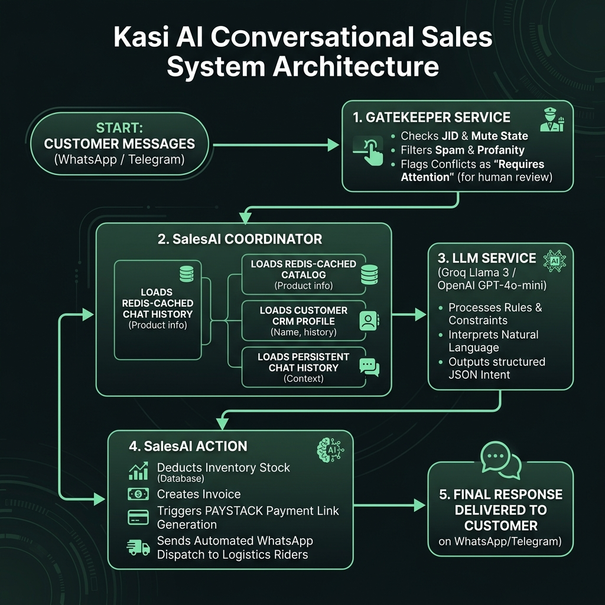
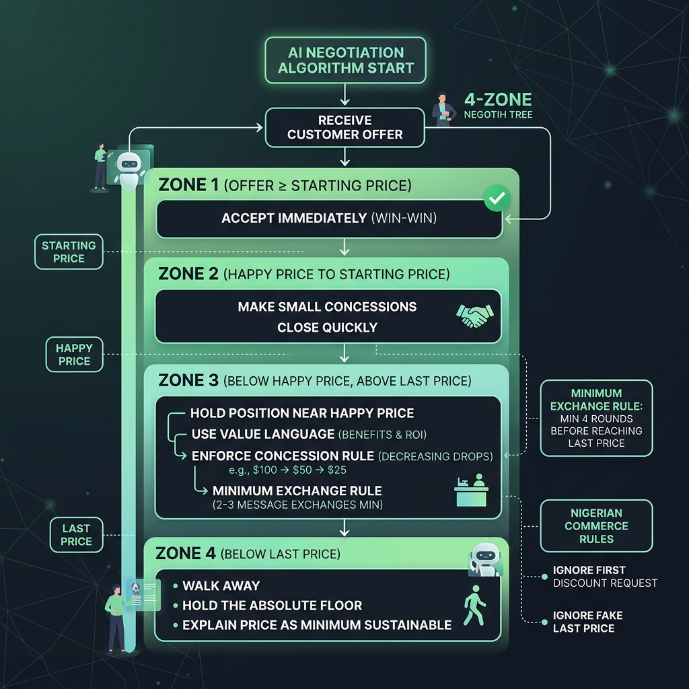

Kasi operates as a multi-tenant messaging router. Each merchant account maintains isolated product catalogs, conversation histories, and automation rules while sharing a unified API layer and webhook infrastructure.
Component
Technology
Purpose
Backend API
Flask + SQLAlchemy
REST API, webhook handlers, AI orchestration
Frontend Dashboard
React + Vite
Merchant portal, settings, analytics
Database
PostgreSQL (prod) / SQLite (dev)
Users, products, invoices, integrations
Task Queue
Celery + Redis
Background jobs, scheduled tasks
Deployment
Docker Compose
Containerized production stack on VPS
8 min read
AdvancedUpdated Jun 2026
Social Media Integrations
Technical guide for how Kasi connects, authorizes, and handles multi-tenant messaging across WhatsApp, Telegram, Instagram, and Facebook Messenger.
1. Data Model
Core DB Model: Integration
Every connected channel is stored in the integrations table:
Column
Type
Description
user_id
Integer FK
Links integration to a specific merchant
platform
String
'whatsapp', 'telegram', 'instagram', or 'facebook'
Audio Transcription: Voice notes are fetched via media API, transcribed by OpenAI Whisper or Groq Whisper, prepended with 🎤 [Voice Note]:.
Rider Interceptor: If sender matches a vendor's saved logistics rider and confirms, the invoice is marked "In Transit" with automatic notifications.
AI Processing: Routes text to SalesAI.process and images to SalesAI.process_image.
🔵 Channel B — Telegram Bots
Telegram integrations use dedicated bots created via @BotFather.
Connection Flow
Credential Entry: Merchant creates a Telegram bot, obtains the Bot Token, and inputs it in Kasi Settings.
Webhook Registration: Kasi registers the webhook: POST https://api.telegram.org/bot{token}/setWebhook?url={BASE_URL}/api/telegram/webhook/{token}
Database Save: Integration saved with platform 'telegram', access_token = token.
Webhook Message Flow
POST /api/telegram/webhook/<token>
Routing: Bot token from URL → Integration.query.filter_by(access_token=token) → identifies merchant.
Processing: Text passed to SalesAI.process.
Dispatch: Reply via POST https://api.telegram.org/bot{token}/sendMessage.
🟣 Channel C — Instagram DM & Facebook Messenger
Meta messaging channels use a single Meta Developer App with Graph API and OAuth.
Frictionless OAuth: Vendors click "Connect", authorize via Facebook Dialog, select their page/IG account, and are connected automatically. No manual tokens needed.
Connection Flow (OAuth)
Authorization Request: Frontend redirects to Facebook's OAuth URL: https://www.facebook.com/v21.0/dialog/oauth?client_id={APP_ID}&redirect_uri={FRONTEND_URL}/settings&scope=pages_show_list,pages_messaging,instagram_basic,instagram_manage_messages,pages_read_engagement&response_type=code&state={platform}
Facebook Redirect: After authorization, Facebook redirects back: https://usekasi.com/settings?code={auth_code}&state={instagram|facebook}
Code Exchange: Frontend sends code to backend: POST /api/meta/oauth/callback
Token Exchange: Backend exchanges auth code for User Access Token via Meta API.
Page List Query: Backend calls /me/accounts to fetch Page IDs and Page Access Tokens.
Account Resolution:
Facebook: First Page's ID → instance_name, Page Access Token → access_token.
Instagram: Queries each page for instagram_business_account. If found, IG Account ID → instance_name, Page Access Token → access_token.
Webhook Message Flow
POST /api/meta/webhook
Signature Verification: Validates x-hub-signature-256 using HMAC-SHA256 with META_APP_SECRET.
Routing: Inspects entry.messaging.recipient.id → queries Integration by instance_name.
Image Support: CDN URLs fetched, converted to base64, passed to SalesAI.process_image.
Response Dispatch: POST https://graph.facebook.com/v21.0/me/messages?access_token={page_access_token}
# Meta Graph API configuration
META_APP_ID=**********************
META_APP_SECRET=********************************
META_VERIFY_TOKEN=********************************
# Evolution API (WhatsApp) configuration
EVOLUTION_API_URL=http://localhost:8080
EVOLUTION_GLOBAL_API_KEY=************************
# General config
BASE_URL=https://api.usekasi.com
Security: Never commit real API secrets to version control. Use environment variables and .env files excluded from Git via .gitignore.
4. Troubleshooting
Meta Webhook Handshake Failing:
Ensure META_VERIFY_TOKEN matches exactly between the Meta Developer portal and backend .env.
Instagram Webhooks Not Delivering:
Verify the Instagram account is set to Business type (Creator type has restrictions).
Verify the IG account is linked to the Facebook Page in Settings.
Confirm the PAT was granted instagram_manage_messages permission.
WhatsApp Pairing Code Failing:
Check Evolution API container health: docker ps | grep evolution. Ensure the global API key matches.
5 min read
IntermediateUpdated Jun 2026
VPS Production Deployment
Command-by-command guide for staging, pushing, deploying, and rebuilding Kasi on a Hostinger VPS with Docker Compose.
1. Architecture Overview
The production VPS uses a containerized Docker network. The database container (kasi_db) runs PostgreSQL on port 5432 with no public port exposure, fully isolated inside the private Docker network (kasi-network).
Development runs on SQLite locally. Production uses PostgreSQL. Schema changes are synchronized via Alembic migration scripts.
2. Git Staging & Pushing (Local)
# Check modified files
git status
# Stage all files
git add .
# Commit with semantic message
git commit -m "feat: complete meta integration webhook"
# Push to GitHub
git push origin main
3. Deploy on VPS
# SSH into VPS
ssh root@***.***.*.*
# Navigate to backend
cd ~/kasi-backend
# Pull latest
git pull origin main
# Force-rebuild and recreate all containers
docker compose up -d --build --force-recreate
Flags:--build recompiles Dockerfiles to pull new packages. --force-recreate ensures .env variables are fully reloaded.
Migrations run inside the Flask container via docker compose exec:
# Standard upgrade
docker compose exec kasi-backend flask db upgrade
# Check current migration version
docker compose exec kasi-backend flask db current
# Stamp database to specific revision (if diverged)
docker compose exec kasi-backend flask db stamp <revision_id>
Alembic Divergence: If you get "Target database not up-to-date", stamp the database at the correct revision first, then run flask db upgrade.
SELECT id, business_name, kasi_credits FROM users;
View merchant credits
SELECT reference, customer_name, total_amount, status FROM invoices ORDER BY created_at DESC LIMIT 5;
Last 5 invoices
\q
Exit console
7. Automated Backups
Set up daily midnight PostgreSQL backups via cron:
# Edit system cron
crontab -e
# Append this line for daily midnight backup
0 0 * * * mkdir -p /root/db-backups && docker exec -t kasi_db pg_dump -U ******** **************** > /root/db-backups/backup_$(date +\%F).sql 2>&1
10 min read
IntermediateUpdated Jun 2026
How Kasi Brain Works
Understand the inner workings of Kasi's AI sales brain, orchestrator flow, the 4-zone negotiation algorithm, and pre-payment logistics check.
1. High-Level Architecture & Message Lifecycle
Kasi processes customer inquiries through a pipeline designed to reduce API query costs, maintain strict catalog truthfulness, and automate negotiation and billing. The process starts when a message is received via a webhook and ends when an invoice, booking, or contextual response is dispatched back to the customer.

Figure 1: Kasi end-to-end messaging pipeline and system lifecycle.
The messaging pipeline is divided into five stages:
Message Ingress: Webhooks on channels like WhatsApp (Evolution API), Telegram, Instagram DM, and Facebook Messenger receive messages and route them to POST /api/<platform>/webhook.
Gatekeeping: The message passes through GatekeeperService to filter out noise, group chats, and check if the vendor has muted Kasi. It also scans for safety/conflict keywords (e.g. disputes or human handoff) and flags matching conversations as "Requires Attention".
Context Synthesis:SalesAI compiles the vendor's catalog, checks the Redis cache, queries past customer purchase history (lifetime orders, lifetime spend, past items), and fetches persistent conversation history.
AI Reasoning (The "Thinker"): The compiled context is handed over to the LLM (primary Groq Llama 3.3 or failover OpenAI GPT-4o) which processes the system prompts and returns structured JSON containing classification, negotiation parameters, and response text.
Fulfillment & Response:SalesAI decodes the JSON, handles stock deductibles, updates the database, creates temporary invoices or bookings, checks logistics rider availability, and sends the final response text alongside media files or Paystack payment links.
2. Core Components
Kasi's backend leverages specialized modules in backend/app/services/ to orchestrate conversations:
🛡️ GatekeeperService (gatekeeper_service.py) — The Bouncer
Running LLM calls for every "ok", "lol", or meme is expensive. The Gatekeeper acts as a cost-saving and safety shield before the AI is invoked.
JID Filtering: Automatically discards WhatsApp group messages (@g.us), broadcasts (@broadcast), and system messages on Facebook/Instagram.
State Checking: Checks if the merchant has toggled automation off globally (is_automated = False) or if the specific conversation has been muted by the merchant.
Keyword Intent Classification: Uses Regex to scan for commercial keywords (pricing, stock, delivery, pidgin terms like "how much na") and casual greetings. If a message contains personal keywords (school, family, coding) but no commercial intent, it is blocked to save computing costs.
Safety & Conflict Escalation: Scans for handoff requests ("speak to human", "talk to manager") and disputes ("wrong order", "refund", "payment dispute"). If found, it flags the chat as Requires Attention, triggers a vendor notification, and calls Groq to generate a Smart Summary to help the merchant intervene immediately.
🤖 SalesAI (sales_ai.py) — The Store Manager
SalesAI is the central coordinator. It does not generate text replies itself; instead, it coordinates data retrieval, invokes the AI models, parses the response JSON, and triggers database operations.
Caching Layer: Uses Redis cache to retrieve product catalogs and services instantly, minimizing database load.
CRM Context Integrations: Fetches lifetime spent, order count, and past items bought for the customer to populate the prompt context, allowing personalized interaction.
Automated Billing & Invoicing: Creates invoices in the database, locks stock quantity, and generates Paystack links when order conditions are met.
Logistics Rider Dispatch: If a delivery address is provided and the merchant has registered logistics phone numbers, SalesAI sends an automated WhatsApp message via the Evolution API to the riders asking them to confirm the delivery request.
⚡ GroqService (groq_service.py) — The Primary Sales Rep
Groq powers 99% of Kasi's real-time chats. Using Llama 3.3 70B, it operates at speeds up to 100+ tokens/sec, enabling near-instant response times on messaging platforms.
Nigerian Tone & Personality: Instills Kasi's core personality. Mixes natural Nigerian English with casual Pidgin (e.g. "no wahala", "sharp sharp"). Instructs Kasi to avoid robotic corporate phrases like "How may I assist you?".
Strict Source of Truth: Forces Kasi to only quote specifications explicitly declared in the database catalog. If a detail is missing, Kasi must politely deflect: "Let me confirm that detail from the owner so I don't give you wrong info...".
JSON Response Enforcement: Forces the model to output a strict JSON scheme containing intent, clean text, extracted products, bookings, delivery address, and negotiation state.
🧠 OpenAIService (openai_service.py) — The Backup & Vision Expert
OpenAI serves two critical functions in Kasi's architecture:
Automated Failover: If the Groq API key is exhausted or their services experience downtime, SalesAI automatically downgrades to OpenAIService (using GPT-4o) to ensure conversations never break.
Vision Tasks: When a customer uploads a photo of an item asking "Do you have this?", OpenAIService processes the image base64, compares it visually against the merchant's catalog descriptions, and identifies the product match.
3. The 3-Tier Negotiation Algorithm
One of Kasi's most advanced features is its automated bargaining engine. Rather than yielding immediately to discounts, Kasi acts like a real Nigerian merchant, using a zone-based decision tree and concession controls.

Figure 2: Zone-based pricing decision tree and bargaining rules.
The Three Internal Price Points
Every product/service in the merchant's database has three price variables (hidden from customers):
Starting Price: The opening public price. Always quoted first.
Happy Price: The target closing price the merchant desires. Kasi attempts to close transactions at or above this line.
Last Price: The absolute floor limit. This is a safety net and is almost never revealed early.
The 4 Negotiation Zones
Zone
Customer Offer Range
Kasi Action / Strategy
Zone 1
Offer ≥ Starting Price
Accept immediately and proceed to billing. (If they offer more, do not correct them down!).
Zone 2
Starting Price > Offer ≥ Happy Price
Make a small concession toward their offer but stay above Happy Price. Try to close quickly.
Zone 3
Happy Price > Offer ≥ Last Price
Slow down negotiation. Hold firm near Happy Price. Highlight quality. Concession drops must decrease in size.
Zone 4
Offer < Last Price
Do not follow the customer there. Refuse the price, re-anchor near Last Price, and hold.
The Concession Rule: Every price drop offered by Kasi must be smaller than the previous drop (e.g. ₦1,000 drop → next max ₦500 drop → next max ₦200 drop → hold). This stops customers from assuming that persistence always leads to cheaper pricing.
Strict Bargaining Guardrails
Minimum Exchange Rule: Kasi is barred from reaching the Last Price in fewer than 4 chat exchanges. This ensures bargaining feels natural and limits profit margin losses.
Nigerian Commerce Filters:
Refuse first discount: Nigerians bargain reflexively. Kasi ignores the first request for a discount, holding the starting price to gauge genuine buyer intent.
Ignore fake "Last Price": If the customer claims an offer is their "last price" but it sits below the Happy Price, Kasi holds its ground and waits for the customer to adjust.
Friendly Walk-away: If a customer stays below the Last Price for 3+ exchanges, Kasi will politely suspend bargaining: "I understand this price doesn't work for you. If you change your mind, let me know - I'll see what I can do." This frequently prompts the customer to re-engage.
4. Pre-Payment Logistics & Delivery Flow
To avoid invoice discrepancies and manual customer service adjustments, Kasi implements a strict gating sequence for orders:
Logistics Gating Rule: Kasi MUST NOT include items in the products JSON array or trigger invoice creation on the initial request. It must resolve delivery vs pickup first.
The Purchase Request: The customer says "I want to order X".
Option Resolution: Instead of printing an invoice, Kasi asks: "Would you like delivery or pickup?", setting the JSON intent to delivery_choice and keeping products: [] empty.
Pickup Resolution: If the customer chooses pickup, Kasi sets intent: "order", registers delivery_address: "PICKUP", and inserts the item alongside a virtual "Delivery Fee" product set to ₦0. Kasi then shares the vendor's physical address.
Delivery Resolution: If the customer chooses delivery, Kasi requests their address first. Once provided:
It parses the area and matches it against the merchant's delivery_rates in the database.
If the location matches, it extracts the custom fee. If it is not listed, it defaults to a standard fee of ₦2,000.
Sets intent: "order", saves the address in delivery_address, and populates the products array including the virtual "Delivery Fee" set to the calculated price.
Invoice Compilation: SalesAI reads the finalized details, compiles the PDF invoice with the correct taxes and delivery rates, creates the database record, and sends the customer the checkout link.
5. Smart Verification of Payment Claims
Customers often send screenshots or text saying "payment done" or "receipt sent" before the money clears. Kasi is built to handle this securely:
Detection: If a customer claims they paid, Kasi classifies the intent as payment_confirmation.
Zero Trust: Kasi never confirms a payment has cleared within the chat dialogue. The database invoice status remains Pending.
Paystack Webhooks: Payment verification is handled solely by the backend webhook receiver listening directly to Paystack's server-to-server notifications.
Deflection Response: Kasi replies by stating it is waiting for the secure gateway to clear the transaction: "No problem! I'm waiting for our secure Paystack gateway to clear the transaction. Once confirmed, I'll instantly send a receipt here so we can arrange delivery!". This prevents manual override attempts or fake receipt scams.